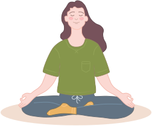
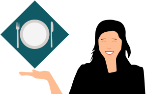
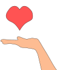
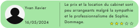
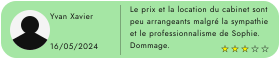

Le bien-être pour tous
Le cabinet de nutrithérapie et de sophorologie de Sophie Durand offre ses services pour tous les budgets, à travers plusieurs programmes simples et complets, afin d'accompagner spécialement chaque client.
Les bienfaits de nos méthodes
1 - Réguler l'alimentation
Il est très important de vérifier et de réguler les apports alimentaires, ainsi que d'abandonner les mauvaises habitudes lors des repas (sauter le déjeuner, manger devant la TV, etc...)
De plus, il faut éliminer les "mauvais" aliments (par exemple, si l'on mange du poisson, alors on ne mange pas de viande) afin de créer de nouvelles et meilleures habitudes.
2 - Obtenir un accompagnement personnalisé
Améliorer le régime alimentaire passe par un accompagnement spécial pour chaque personne, en temps réel et sur le long terme. Le régime sera adapté au physique, à la santé et aux objectifs fixées par le client et notre cabinet.
3 - Mise en contact avec des professionnels de santé
Un contact avec un médecin, un psychologue ou encore un coach sportif peut être établi selon les besoins du client. Changer ses habitudes signifie aussi sortir de l'auto-jugement et de la culpabilité par la compréhension des mécanismes pulsionnels et de dépendances.
Prendre rendez-vous dès maintenant
Vos avis
 
